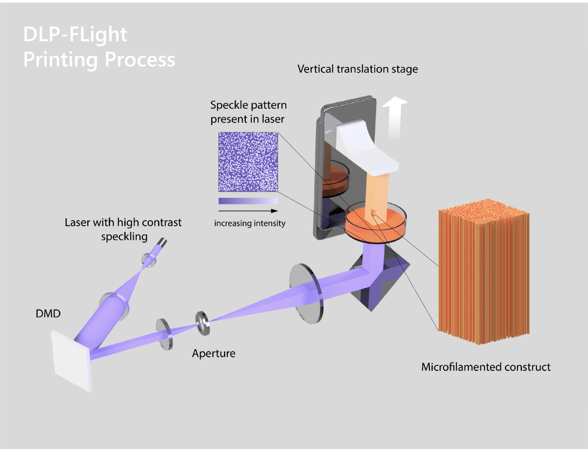
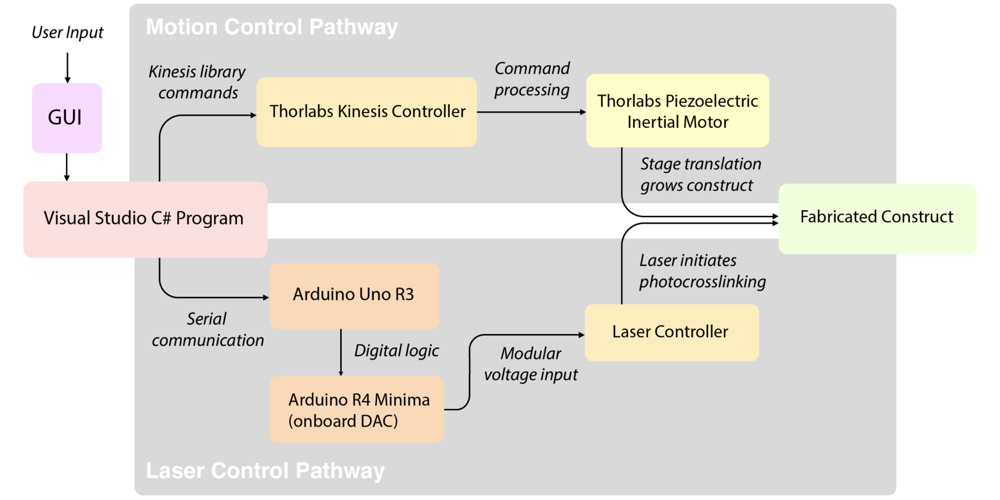
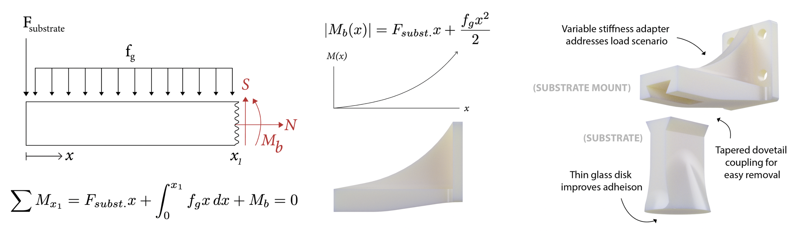
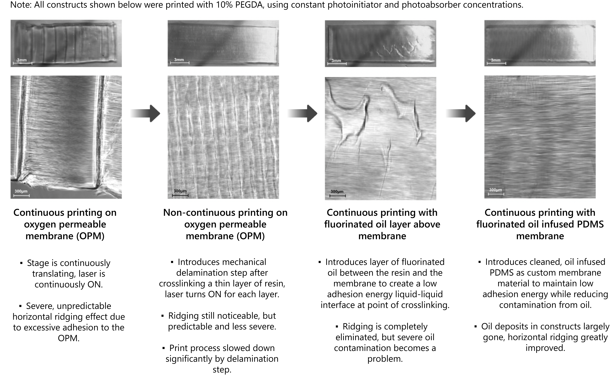

Piezoelectric Filamented Light 3D Bioprinter
Summer research project at ETH Zürich, advised by Dr. Parth Chansoria and Prof. Marcy Zenobi-Wong.

Background
Filamented Light (FLight) 3D bioprinting is a technique developed by ETH Zürich's Tissue
Engineering and Biofabrication Group to fabricate tissue constructs with highly aligned
microfilaments. These microfilaments are caused by a "speckle" pattern of local maxima in the
light source, and are a desirable characteristic for anisotropic tissues like muscle and tendon.
While the traditional FLight printing is limited to relatively short, constant cross-section constructs
due to a lack of translating elements, the adoption of a DLP-style printing setup with a vertical translation
stage makes it possible to fabricate much larger constructs with increased geometric complexity.
Over the summer of 2024, I adapted FLight biofabrication for DLP-style bioprinting. This new
printer (overviewed to the left) can fabricate constructs over 40mm
in length (approximately 10x longer than traditional FLight constructs).
System Overview
Behind the scenes, this printer relies on custom software to communicate user commands on two fronts simultaneously—the software transmits motion-related commands to the vertical translation stage, while maintaining communication with the laser controller via a set of Arduinos. Thus, while the translation stage continuously draws the printed construct up out of the resin bath, the laser can crosslink (chemically knit into a stiffer structure) the new resin that flows into place under the construct, allowing it to grow at the rate of stage translation.

The bulk of the software for this printer is written in C#, and carrying out a few tasks at once: (1) Using Thorlabs' motion control libraries to send position/velocity commands to the piezoelectric translation stage, (2) continuously streaming serial data to an Arduino to control the voltage to the laser controller, and (3) wrapping up all these functions (for printing, homing, parameter control, etc.) into a WPF user interface.
There were some small, simple hardware components to develop for this project: a substrate for the printed construct to adhere to, a substrate mount to attach this substrate to the stage, and a mount for the stage itself. While the stage mount design is trivial, the substrate & its mount have more interesting designs, shown below, in order to be (1) easy to interact with and (2) well-suited for their load conditions.

Process & Material Optimization
Following initial hardware and software development for the printer, I began a series of test prints. See below a summary of significant revisions to the printing process and materials used, which ultimately enabled us to reliably print high-detail constructs with a variety of materials, including cell-seeded materials.

Acknowledgements
Thank you so much to Professor Marcy Zenobi-Wong for having me as a guest in the lab to work on this printer, and to Dr. Parth Chansoria for being my direct advisor! A big thank you as well to the ThinkSwiss Research Scholarship for funding my work on this project.